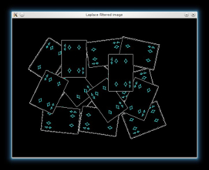
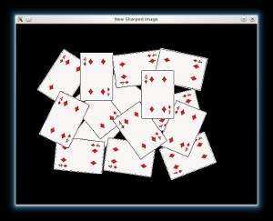

Image Segmentation with Distance Transform and Watershed Algorithm
Goal
In this tutorial you will learn how to:
- Use the OpenCV function cv::filter2D in order to perform some laplacian filtering for image sharpening
- Use the OpenCV function cv::distanceTransform in order to obtain the derived representation of a binary image, where the value of each pixel is replaced by its distance to the nearest background pixel
- Use the OpenCV function cv::watershed in order to isolate objects in the image from the background
Theory
Code
This tutorial code’s is shown lines below. You can also download it from here.
#include <opencv2/opencv.hpp> #include <iostream> using namespace std; using namespace cv; int main(int, char** argv) { // Load the image Mat src = imread(argv[1]); // Check if everything was fine if (!src.data) return -1; // Show source image imshow("Source Image", src); // Change the background from white to black, since that will help later to extract // better results during the use of Distance Transform for( int x = 0; x < src.rows; x++ ) { for( int y = 0; y < src.cols; y++ ) { if ( src.at<Vec3b>(x, y) == Vec3b(255,255,255) ) { src.at<Vec3b>(x, y)[0] = 0; src.at<Vec3b>(x, y)[1] = 0; src.at<Vec3b>(x, y)[2] = 0; } } } // Show output image imshow("Black Background Image", src); // Create a kernel that we will use for accuting/sharpening our image Mat kernel = (Mat_<float>(3,3) << 1, 1, 1, 1, -8, 1, 1, 1, 1); // an approximation of second derivative, a quite strong kernel // do the laplacian filtering as it is // well, we need to convert everything in something more deeper then CV_8U // because the kernel has some negative values, // and we can expect in general to have a Laplacian image with negative values // BUT a 8bits unsigned int (the one we are working with) can contain values from 0 to 255 // so the possible negative number will be truncated Mat imgLaplacian; Mat sharp = src; // copy source image to another temporary one filter2D(sharp, imgLaplacian, CV_32F, kernel); src.convertTo(sharp, CV_32F); Mat imgResult = sharp - imgLaplacian; // convert back to 8bits gray scale imgResult.convertTo(imgResult, CV_8UC3); imgLaplacian.convertTo(imgLaplacian, CV_8UC3); // imshow( "Laplace Filtered Image", imgLaplacian ); imshow( "New Sharped Image", imgResult ); src = imgResult; // copy back // Create binary image from source image Mat bw; cvtColor(src, bw, CV_BGR2GRAY); threshold(bw, bw, 40, 255, CV_THRESH_BINARY | CV_THRESH_OTSU); imshow("Binary Image", bw); // Perform the distance transform algorithm Mat dist; distanceTransform(bw, dist, CV_DIST_L2, 3); // Normalize the distance image for range = {0.0, 1.0} // so we can visualize and threshold it normalize(dist, dist, 0, 1., NORM_MINMAX); imshow("Distance Transform Image", dist); // Threshold to obtain the peaks // This will be the markers for the foreground objects threshold(dist, dist, .4, 1., CV_THRESH_BINARY); // Dilate a bit the dist image Mat kernel1 = Mat::ones(3, 3, CV_8UC1); dilate(dist, dist, kernel1); imshow("Peaks", dist); // Create the CV_8U version of the distance image // It is needed for findContours() Mat dist_8u; dist.convertTo(dist_8u, CV_8U); // Find total markers vector<vector<Point> > contours; findContours(dist_8u, contours, CV_RETR_EXTERNAL, CV_CHAIN_APPROX_SIMPLE); // Create the marker image for the watershed algorithm Mat markers = Mat::zeros(dist.size(), CV_32SC1); // Draw the foreground markers for (size_t i = 0; i < contours.size(); i++) drawContours(markers, contours, static_cast<int>(i), Scalar::all(static_cast<int>(i)+1), -1); // Draw the background marker circle(markers, Point(5,5), 3, CV_RGB(255,255,255), -1); imshow("Markers", markers*10000); // Perform the watershed algorithm watershed(src, markers); Mat mark = Mat::zeros(markers.size(), CV_8UC1); markers.convertTo(mark, CV_8UC1); bitwise_not(mark, mark); // imshow("Markers_v2", mark); // uncomment this if you want to see how the mark // image looks like at that point // Generate random colors vector<Vec3b> colors; for (size_t i = 0; i < contours.size(); i++) { int b = theRNG().uniform(0, 255); int g = theRNG().uniform(0, 255); int r = theRNG().uniform(0, 255); colors.push_back(Vec3b((uchar)b, (uchar)g, (uchar)r)); } // Create the result image Mat dst = Mat::zeros(markers.size(), CV_8UC3); // Fill labeled objects with random colors for (int i = 0; i < markers.rows; i++) { for (int j = 0; j < markers.cols; j++) { int index = markers.at<int>(i,j); if (index > 0 && index <= static_cast<int>(contours.size())) dst.at<Vec3b>(i,j) = colors[index-1]; else dst.at<Vec3b>(i,j) = Vec3b(0,0,0); } } // Visualize the final image imshow("Final Result", dst); waitKey(0); return 0; }
Explanation / Result
Load the source image and check if it is loaded without any problem, then show it:
// Load the image Mat src = imread(argv[1]); // Check if everything was fine if (!src.data) return -1; // Show source image imshow("Source Image", src);

Then if we have an image with white background, it is good to tranform it black. This will help us to desciminate the foreground objects easier when we will apply the Distance Transform:
// Change the background from white to black, since that will help later to extract // better results during the use of Distance Transform for( int x = 0; x < src.rows; x++ ) { for( int y = 0; y < src.cols; y++ ) { if ( src.at<Vec3b>(x, y) == Vec3b(255,255,255) ) { src.at<Vec3b>(x, y)[0] = 0; src.at<Vec3b>(x, y)[1] = 0; src.at<Vec3b>(x, y)[2] = 0; } } } // Show output image imshow("Black Background Image", src);

Afterwards we will sharp our image in order to acute the edges of the foreground objects. We will apply a laplacian filter with a quite strong filter (an approximation of second derivative):
// Create a kernel that we will use for accuting/sharpening our image Mat kernel = (Mat_<float>(3,3) << 1, 1, 1, 1, -8, 1, 1, 1, 1); // an approximation of second derivative, a quite strong kernel // do the laplacian filtering as it is // well, we need to convert everything in something more deeper then CV_8U // because the kernel has some negative values, // and we can expect in general to have a Laplacian image with negative values // BUT a 8bits unsigned int (the one we are working with) can contain values from 0 to 255 // so the possible negative number will be truncated Mat imgLaplacian; Mat sharp = src; // copy source image to another temporary one filter2D(sharp, imgLaplacian, CV_32F, kernel); src.convertTo(sharp, CV_32F); Mat imgResult = sharp - imgLaplacian; // convert back to 8bits gray scale imgResult.convertTo(imgResult, CV_8UC3); imgLaplacian.convertTo(imgLaplacian, CV_8UC3); // imshow( "Laplace Filtered Image", imgLaplacian ); imshow( "New Sharped Image", imgResult );
 Now we tranfrom our new sharped source image to a grayscale and a binary one, respectively:
// Create binary image from source image Mat bw; cvtColor(src, bw, CV_BGR2GRAY); threshold(bw, bw, 40, 255, CV_THRESH_BINARY | CV_THRESH_OTSU); imshow("Binary Image", bw);

We are ready now to apply the Distance Tranform on the binary image. Moreover, we normalize the output image in order to be able visualize and threshold the result:
// Perform the distance transform algorithm Mat dist; distanceTransform(bw, dist, CV_DIST_L2, 3); // Normalize the distance image for range = {0.0, 1.0} // so we can visualize and threshold it normalize(dist, dist, 0, 1., NORM_MINMAX); imshow("Distance Transform Image", dist);

We threshold the dist image and then perform some morphology operation (i.e. dilation) in order to extract the peaks from the above image:
// Threshold to obtain the peaks // This will be the markers for the foreground objects threshold(dist, dist, .4, 1., CV_THRESH_BINARY); // Dilate a bit the dist image Mat kernel1 = Mat::ones(3, 3, CV_8UC1); dilate(dist, dist, kernel1); imshow("Peaks", dist);

From each blob then we create a seed/marker for the watershed algorithm with the help of the cv::findContours function:
// Create the CV_8U version of the distance image // It is needed for findContours() Mat dist_8u; dist.convertTo(dist_8u, CV_8U); // Find total markers vector<vector<Point> > contours; findContours(dist_8u, contours, CV_RETR_EXTERNAL, CV_CHAIN_APPROX_SIMPLE); // Create the marker image for the watershed algorithm Mat markers = Mat::zeros(dist.size(), CV_32SC1); // Draw the foreground markers for (size_t i = 0; i < contours.size(); i++) drawContours(markers, contours, static_cast<int>(i), Scalar::all(static_cast<int>(i)+1), -1); // Draw the background marker circle(markers, Point(5,5), 3, CV_RGB(255,255,255), -1); imshow("Markers", markers*10000);

Finally, we can apply the watershed algorithm, and visualize the result:
// Perform the watershed algorithm watershed(src, markers); Mat mark = Mat::zeros(markers.size(), CV_8UC1); markers.convertTo(mark, CV_8UC1); bitwise_not(mark, mark); // imshow("Markers_v2", mark); // uncomment this if you want to see how the mark // image looks like at that point // Generate random colors vector<Vec3b> colors; for (size_t i = 0; i < contours.size(); i++) { int b = theRNG().uniform(0, 255); int g = theRNG().uniform(0, 255); int r = theRNG().uniform(0, 255); colors.push_back(Vec3b((uchar)b, (uchar)g, (uchar)r)); } // Create the result image Mat dst = Mat::zeros(markers.size(), CV_8UC3); // Fill labeled objects with random colors for (int i = 0; i < markers.rows; i++) { for (int j = 0; j < markers.cols; j++) { int index = markers.at<int>(i,j); if (index > 0 && index <= static_cast<int>(contours.size())) dst.at<Vec3b>(i,j) = colors[index-1]; else dst.at<Vec3b>(i,j) = Vec3b(0,0,0); } } // Visualize the final image imshow("Final Result", dst);